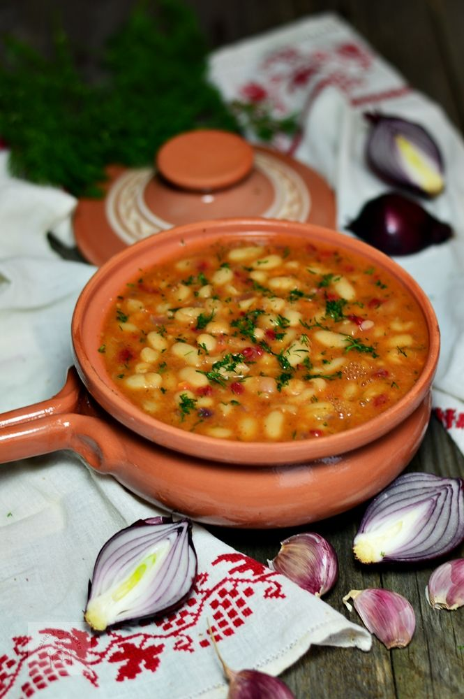
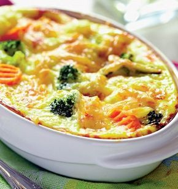

Rețete sănătoase – ONCO-PLAN

Acasă Menu Acasă Sănătate și nutriție Importanța nutriției Provocări în alimentație Obținerea sfaturilor nutriționale Sfaturi pentru o nutriție sănătoasă Rețete sănătoase Menu Sănătate și nutriție Importanța nutriției Provocări în alimentație Obținerea sfaturilor nutriționale Sfaturi pentru o nutriție sănătoasă Rețete sănătoase Sănătate emoțională Gestionarea emoțiilor Strategii de luptă împotriva cancerului Tehnici de relaxare Menu Sănătate emoțională Gestionarea emoțiilor Strategii de luptă împotriva cancerului Tehnici de relaxare Comunicare Comunicarea cu familia și prietenii Comunicarea cu medicul Comunicarea familiei cu bolnavul de cancer Comunicarea medicului cu persoana diagnosticată cu cancer Menu Comunicare Comunicarea cu familia și prietenii Comunicarea cu medicul Comunicarea familiei cu bolnavul de cancer Comunicarea medicului cu persoana diagnosticată cu cancer Navigatorul de pacienți Asociațiile de pacienți Educarea pacienților Grupurile de suport Menu Navigatorul de pacienți Asociațiile de pacienți Educarea pacienților Grupurile de suport Planul Tău Creează-ți Planul Menu Planul Tău Creează-ți Planul REFERINȚE Menu REFERINȚE Acasă Menu Acasă Planul Tău Creează-ți Planul Menu Planul Tău Creează-ți Planul REFERINȚE Menu REFERINȚE Sănătate și nutriție Importanța nutriției Provocări în alimentație Obținerea sfaturilor nutriționale Sfaturi pentru o nutriție sănătoasă Rețete sănătoase Menu Sănătate și nutriție Importanța nutriției Provocări în alimentație Obținerea sfaturilor nutriționale Sfaturi pentru o nutriție sănătoasă Rețete sănătoase Sănătate emoțională Gestionarea emoțiilor Strategii de luptă împotriva cancerului Tehnici de relaxare Menu Sănătate emoțională Gestionarea emoțiilor Strategii de luptă împotriva cancerului Tehnici de relaxare Comunicare Comunicarea cu familia și prietenii Comunicarea cu medicul Comunicarea familiei cu bolnavul de cancer Comunicarea medicului cu persoana diagnosticată cu cancer Menu Comunicare Comunicarea cu familia și prietenii Comunicarea cu medicul Comunicarea familiei cu bolnavul de cancer Comunicarea medicului cu persoana diagnosticată cu cancer Navigatorul de pacienți Asociațiile de pacienți Educarea pacienților Grupurile de suport Menu Navigatorul de pacienți Asociațiile de pacienți Educarea pacienților Grupurile de suport Sănătate și nutriție Importanța nutriției Provocări în alimentație Obținerea sfaturilor nutriționale Sfaturi pentru o nutriție sănătoasă Rețete sănătoase Menu Sănătate și nutriție Importanța nutriției Provocări în alimentație Obținerea sfaturilor nutriționale Sfaturi pentru o nutriție sănătoasă Rețete sănătoase Sănătate emoțională Gestionarea emoțiilor Strategii de luptă împotriva cancerului Tehnici de relaxare Menu Sănătate emoțională Gestionarea emoțiilor Strategii de luptă împotriva cancerului Tehnici de relaxare Comunicare
Comunicarea medicului cu persoana diagnosticată cu cancer Comunicarea cu medicul Comunicarea familiei cu bolnavul de cancer Comunicarea cu familia și prietenii Menu Comunicare
Comunicarea medicului cu persoana diagnosticată cu cancer Comunicarea cu medicul Comunicarea familiei cu bolnavul de cancer Comunicarea cu familia și prietenii Navigatorul de pacienți Asociațiile de pacienți Educarea pacienților Grupurile de suport Menu Navigatorul de pacienți Asociațiile de pacienți Educarea pacienților Grupurile de suport
Planul Tău
Referințe
Smoothie-uri
Mic dejun
Prânz
Cină
Rețete sănătoase
Dacă te confrunți cu provocări care nu îți permit să mănânci anumite alimente, consultă mai multe propuneri de rețete sănătoase, care te pot ajuta să îți optimizezi aportul nutrițional, mâncând în continuare ce îți place.
Descarcă rețeteleSmoothie-uri
Smoothie cu unt de arahide și mango
Citeste mai multSmoothie cu cheesecake cu căpșuni
Citeste mai multSmoothie cu avocado, afine și merișor
Citeste mai multSmoothie cu tofu, susan și cacao
Citeste mai multIaurt cu banane, curmale și nuci
Citeste mai multMic dejun
Terci de ovăz copt, cu unt de susan și mere
Citeste mai mult Soufle de cartofi, curry și pătrunjel Citeste mai multBruschete cu fasole albă și rozmarin
Citeste mai multPrânz
Salată cu avocado și ou
Citeste mai multSupă cremă de sparanghel
Citeste mai multSupă cremă de dovlecei
Citeste mai multCină
Brioșe cu macaroane și brânză
Citeste mai multMâncare de pui și linte rosie
Citeste mai multUn proiect
În parteneriat cu
Merck Sharp & Dohme România SRL,
Bucharest Business Park, corpul C, etaj 3, Şos. Bucureşti-Ploieşti nr. 1A, sector 1, Bucureşti
Termeni de utilizare
Politica de confidențialitate
Politica de utilizare a cookie-urilor
Persoanele prezentate în aceste imagini sunt actori și nu reprezintă pacienți reali. Toate numele, personajele și aspectele prezentate în aceste imagini sunt fictive. Orice asemănare cu evenimente sau persoane reale reprezintă o coincidență.
Acest material este destinat persoanelor afectate de cancer și are caracter informativ, pentru informatii suplimentare adresați-vă medicului dvs. Imagini cu titlu ilustrativ.
RO-NON-00031 Viza ANMDM: Nr. 467E/12.09.2019
Folosim cookie-uri pentru a vă susține experiența pe website-ul nostru. Citește mai multe
Accepta